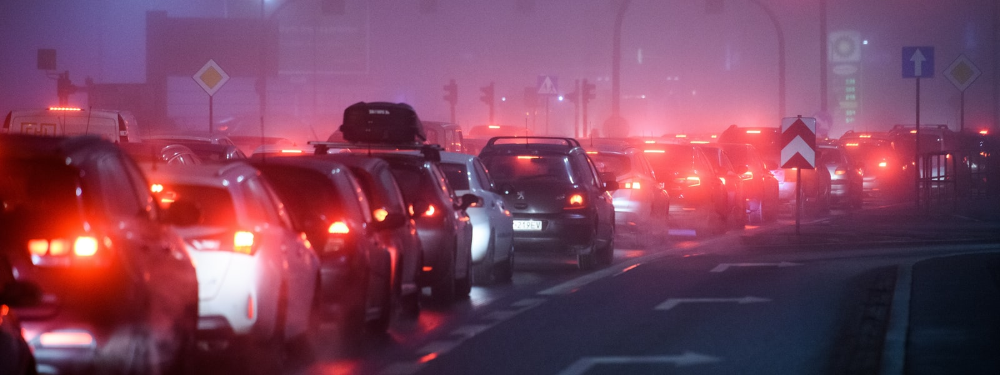

Welcome! You are on light pollution page. Thank you for visiting.
Simple Ways To Help Reduce Light Pollution

- Reduce the use of decorative lighting.
- Use of covered bulbs that light facing downwards
- Use LED Light
- The use of automatic systems to turn off street light at certain times
- The development and advancement of better alternatives to cruises, lighthouses and ships
- Preventive measures are always important
- Glare-free lighting for vehicles driven at night
- Check and put to stop the use of needless lighting during the day.
- All outdoor lights with glare should be replaced with low-glare alternatives.
- Use of motion sensors on important outdoor lights.
- Use Glow stones for all your Outdoor Night Lighting
- Purchase IDA Approved light fixtures
- Support wilderness.
- Place motion sensors on essential outdoor lamps
- Consider replacing outdoor lights with intelligently designed, low-glare fixtures.
- Check with your power company to see if you're paying for outdoor lighting.
- Replace conventional high-energy bulbs with efficient outdoor CFLs and LED floodlights..
- Avoid blue lights at night.
- Use Glow stones for all your Outdoor Night Lighting
- Colored lights can be used as an option.